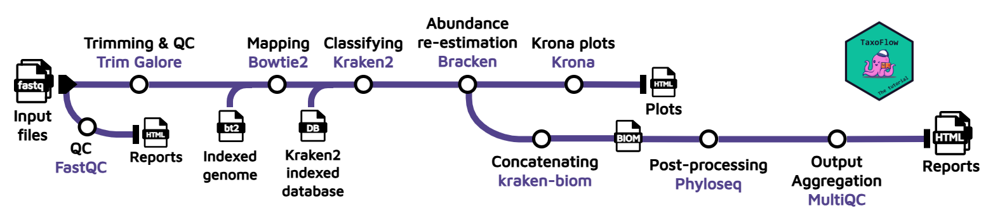
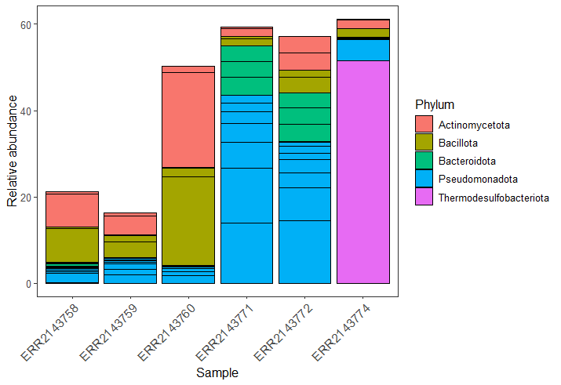
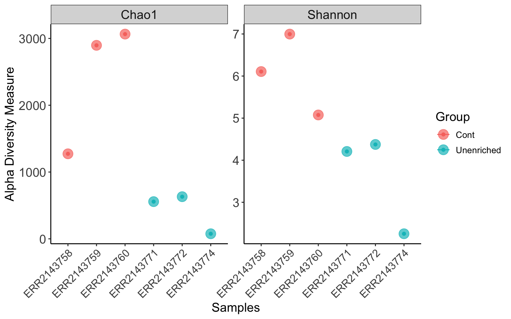
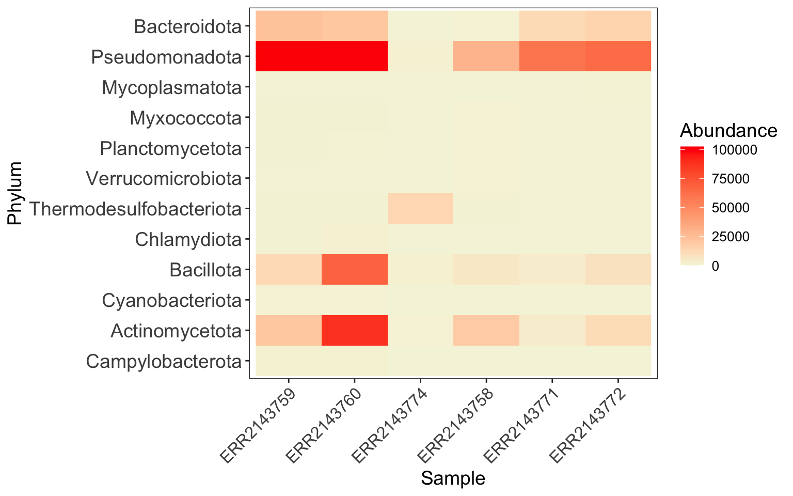
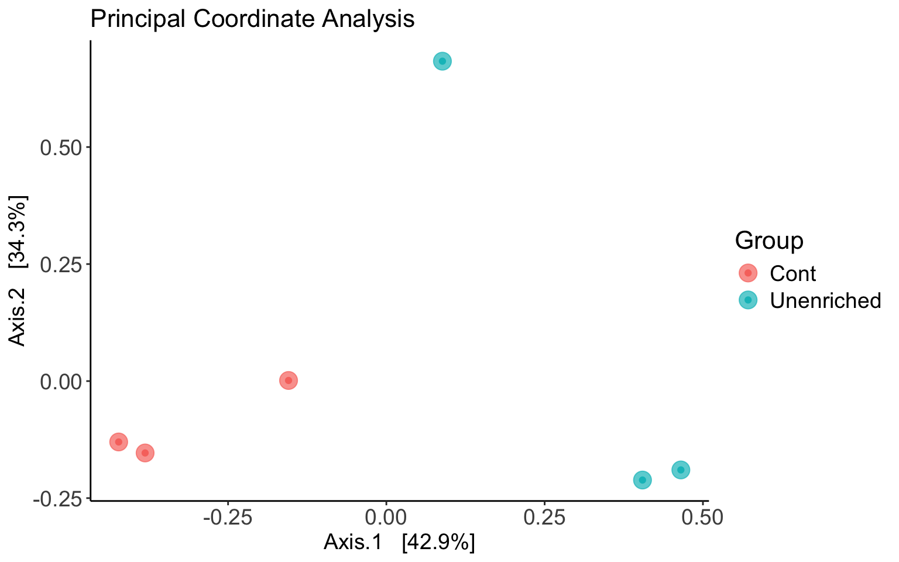
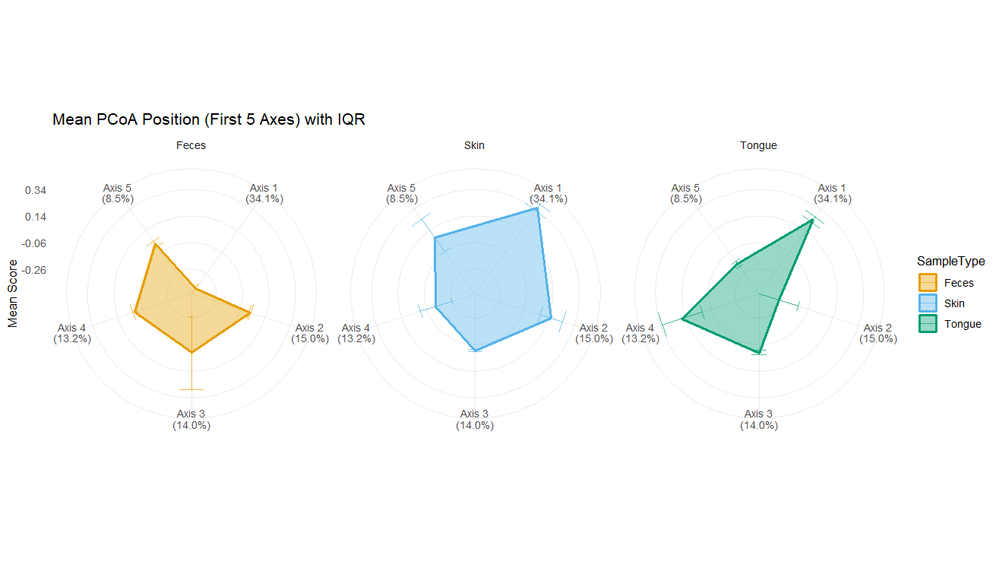
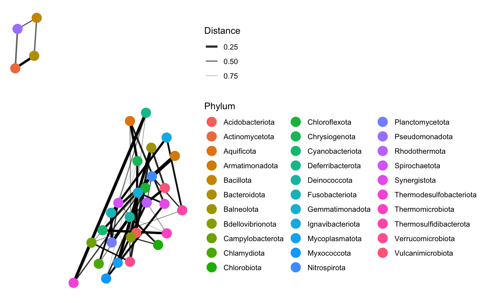
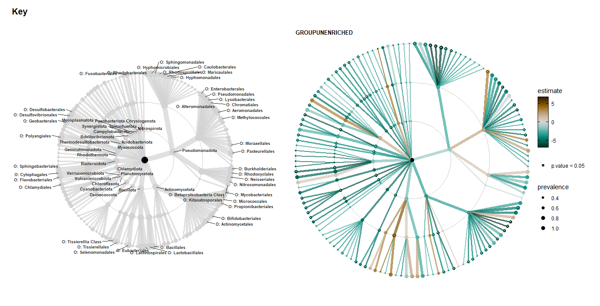

Day 3 - Shotgun metagenomics: classification and downstream analysis
Learning outcomes
After having completed this chapter you will be able to:
- Explain the principles of shotgun (whole-genome) metagenomics and how library preparation, sequencing depth and coverage shape the analysis.
- Distinguish k-mer-based from alignment-based approaches for read-level taxonomic classification.
- Distinguish taxonomic classification (per-read assignment) from taxonomic profiling (community composition estimates).
- Run a reference-based metagenomics pipeline (Bowtie2 → Kraken2 → Bracken → Krona) with Nextflow.
- Explore taxonomic profiles per sample with interactive Krona plots.
- Compare samples with Pavian using Kraken2 reports.
- Build a Phyloseq object from a BIOM file and sample metadata.
- Estimate α- and β-diversity, and run ordination and network analyses.
Material
- Session 1: Session 1 slides
- Session 2: Session 2 slides
Whole genome sequencing and taxonomic classification
Principles of shotgun metagenomic sequencing
Unlike targeted amplicon sequencing (Day 2), shotgun metagenomics sequences all the DNA present in a sample at once. The community DNA is fragmented (physically or enzymatically), sequencing adapters are ligated to both ends of every fragment, and the library is sequenced from both sides. No prior knowledge of which organisms are present is required, so the approach captures bacteria, archaea, fungi, viruses and host DNA. Crucially, it delivers functional information (genes, pathways, MAGs) in addition to taxonomy.
Library preparation, depth and coverage
Several design decisions determine what a shotgun dataset can resolve:
- Library preparation: typically PCR-free or low-cycle protocols are preferred to avoid amplification bias; paired-end short reads (2×150 bp) are the standard, while long-read libraries (PacBio, Nanopore) improve continuity at higher cost and error rate. Host DNA depletion or methylation-based enrichment can be used when the microbial fraction is low (e.g. clinical samples).
- Sequencing depth: how many reads are generated per sample. Shallow shotgun (~1 Gb) supports family-level profiling; deep sequencing (5–20+ Gb) is needed for strain resolution, assembly and MAG recovery.
- Coverage: the number of times a genome is sequenced, which depends on sequencing depth and on the relative abundance of the organism in the community. A genome at 1% relative abundance in a 10 Gb run receives only ~100 Mb of reads (often not enough to assemble). Abundance and genome size therefore jointly determine which members of a community can be recovered as MAGs.
- Community complexity: diverse environments (soil, marine) dilute the coverage of individual genomes, while low-complexity communities (gut, enrichment cultures) are more amenable to assembly and binning (Day 4).
Read-based taxonomic classification
Before dealing with assemblies (Days 4–5), the fastest way to obtain a community profile is to classify individual reads against a reference database. Two families of methods dominate:
- k-mer (hashing)-based: each read is split into k-mers, and the taxonomy of the k-mers (precomputed from a reference genome database) votes for the most likely origin of the read. Extremely fast and memory-efficient for large databases. Examples: Kraken2, KrakenUniq, Centrifuge.
- alignment-based: reads (or their translated products) are aligned with BLAST or DIAMOND against reference sequences; taxonomies are then transferred from the best hits. Slower, but sensitive for divergent sequences and protein-level (functional) assignment. Examples: DIAMOND+MEGAN, BLAST-based classifiers.
- marker-gene-based: only reads matching clade-specific marker genes are used (e.g. MetaPhlAn). Compact, but limited to the markers represented in the database.
The database is the analysis
All reference-based methods are only as good as their database: incomplete or mislabelled references produce false positives and missing taxa. Always record which database version you used.
Session 5 - Taxonomic classification
Objective
Execute an end-to-end workflow with the aim of performing taxonomic classification and abundance estimation, as well as analyze preliminary results.
About the data
The data set we will be using for this part of the workshop was collected in Cuatro Ciénegas (México), an oasis in the Mexican desert whose environmental conditions are often linked to the ones present in ancient seas, due to a higher-than-average content of sulfur and magnesium but a lower concentrations of phosphorus and other nutrients. For more information about this study, please check Okie et al., (2020); the BioProject accession number is PRJEB22811.
The experiment metadata used throughout this chapter:
| Name | Group | Replicate |
|---|---|---|
| ERR2143758 | Cont | 1 |
| ERR2143759 | Cont | 2 |
| ERR2143760 | Cont | 3 |
| ERR2143771 | Unenriched | 1 |
| ERR2143772 | Unenriched | 2 |
| ERR2143774 | Unenriched | 3 |
| ERR2143769 | Fertilized | 1 |
| ERR2143770 | Fertilized | 2 |
| ERR2143773 | Fertilized | 3 |
The pipeline
For this course, we propose to wrap with Nextflow the protocol published by Jennifer Lu et al. (2022). The wrapped workflow is called TaxoFlow and is designed as follows:

As you can see from the picture, the input is FASTQ files from one or multiple samples, then it performs a host removal with Bowtie2 by aligning the reads against an indexed reference genome to carry out the taxonomic classification with Kraken2 afterwards. Taking the output from Kraken2, a Bayesian species abundance re-estimation is achieved with Bracken, and Krona plots are generated using the Bracken output to visualize interactively the relative abundance of each annotated species. If multiple samples are used as input to the pipeline, the bracken reports will be concatenated and converted into a Biological Observation Matrix (BIOM) file. Finally, the BIOM file will be first converted in a Phyloseq object, and this object will be further processed to generate absolute plots, estimate both α and β-diversity and perform a network analysis; this information will be presented in a final report.html.
Running the pipeline
This is only a mock execution/dry run
The run performed during the course uses a mock data given the computational constraints in Codespaces. For a proper analysis you can download the proper resources here.
Copy and paste the following commands in the Codespaces terminal:
CodeSpaces
cd workshop/TaxoFlow
mkdir -p data/krakendb && cd "$_"
wget --no-check-certificate --no-proxy 'https://zenodo.org/api/records/17708950/files/krakendb.tar.gz/content'
tar -xvzf content
rm -r content
cd -
CodeSpaces
mkdir -p data/TAIR10 && cd "$_"
wget --no-check-certificate --no-proxy 'https://genome-idx.s3.amazonaws.com/bt/TAIR10.zip'
unzip TAIR10.zip
rm -r TAIR10.zip
cd -
The directoy of the pipeline will contain:
Directory content
.
├── bin
│ └── report.Rmd
├── data
│ ├── krakendb
│ │ ├── database250mers.kmer_distrib
│ │ ├── database250mers.kraken
│ │ ├── database.kraken
│ │ ├── hash.k2d
│ │ ├── names.dmp
│ │ ├── nodes.dmp
│ │ ├── opts.k2d
│ │ ├── seqid2taxid.map
│ │ └── taxo.k2d
│ ├── samples
│ │ ├── ERR2143768
│ │ │ ├── ERR2143768_1.fastq.gz
│ │ │ └── ERR2143768_2.fastq.gz
│ │ ├── ERR2143770
│ │ │ ├── ERR2143770_1.fastq.gz
│ │ │ └── ERR2143770_2.fastq.gz
│ │ └── ERR2143774
│ │ ├── ERR2143774_1.fastq.gz
│ │ └── ERR2143774_2.fastq.gz
│ ├── samplesheet.csv
│ └── TAIR10
│ ├── TAIR10.1.bt2
│ ├── TAIR10.2.bt2
│ ├── TAIR10.3.bt2
│ ├── TAIR10.4.bt2
│ ├── TAIR10.dict
│ ├── TAIR10.manifest.json
│ ├── TAIR10.rev.1.bt2
│ └── TAIR10.rev.2.bt2
├── main.nf
├── modules
│ ├── bowtie2.nf
│ ├── bracken.nf
│ ├── fastqc.nf
│ ├── knit_phyloseq
│ │ ├── environment.yml
│ │ └── knit_phyloseq.nf
│ ├── kraken2.nf
│ ├── kraken_biom.nf
│ ├── kReport2Krona.nf
│ ├── ktImportText.nf
│ ├── multiqc.nf
│ └── trimgalore.nf
├── nextflow.config
└── taxoflow.nf
We are ready to run the pipeline with the command:
CodeSpaces
nextflow run main.nf --sheet_csv 'data/samplesheet.csv' -profile docker
Mock execution
As mentioned before, this was a mock execution, and therefore to perform a real analysis, we have used a proper Kraken2 database for you to analyze the results below. Moreover, for your analysis you need to define the database and indexed genome you want to implement.
More about TaxoFlow
TaxoFlow is both a tutorial and a pipeline. You can learn more about here.
Pipeline’s output
Krona plots
One of the main and most useful outputs of Taxoflow is Krona plots. These are interactive, multi-layered pie charts used to visualize hierarchic data derived from taxonomic annotation of the sequences.
You can check all of them here:
Pavian
Another way to explore the species abundance across samples, and more importantly compare them, is to use Pavian. Pavian is an interactive, web-based application designed to analyze, explore, and visualize metagenomic classification results, particularly from tools like Kraken2, Centrifuge, and MetaPhlAn.
To use this web server you will need just to upload the Kraken2 reports (*.k2report) found here.
Pavian in trouble?
In case the Pavian web server is not working properly, we have prepared the report for you; you can find it here.
Questions
Now, perform a visual inspection of the results, and consider the following questions:
Question
Do you see anything unusual on it? What would be the reasons causing this problem? What do you propose to solve it?
Question
What do you think of the percentages considering the type of samples we are analyzing?
Question
Do you observe any difference among samples/replicates, at what taxonomic level?
Session 6 - Downstream analysis
Objective
Carry out a downstream analysis using the Kraken2/Bracken output to report important insights in terms of differences among samples.
Phyloseq object
First, download the files found here and place them in a proper local directory (i.e. ~/Desktop/taxoflow).
Now, let’s create the Phyloseq object using the BIOM file generated by the pipeline and the experiment metadata. We are going to manipulate a bit the object to add the names of the taxonomic ranks, complete the species names and subset it to have only two conditions.
RStudio
| Build the Phyloseq object | |
|---|---|
1 2 3 4 5 6 7 8 9 10 11 12 13 14 15 16 17 18 19 20 21 22 23 24 25 26 27 28 29 30 31 | |
phyloseq-class experiment-level object
otu_table() OTU Table: [ 4322 taxa and 6 samples ]
sample_data() Sample Data: [ 6 samples by 2 sample variables ]
tax_table() Taxonomy Table: [ 4322 taxa by 7 taxonomic ranks ]
We already have created our Phyloseq object, and we are ready to move on with the analysis.
Exploration
Let’s check what first the community position in terms of abundance:
RStudio
| Abundance plot | |
|---|---|
33 34 35 36 37 38 39 40 41 42 43 44 45 46 47 48 49 50 51 | |
α-Diversity

α-Diversity
Next, let’s explore the α-diversity among samples using two indexes, Chao1 and Shannon:
RStudio
| α-Diversity (Chao1 & Shannon) | |
|---|---|
52 53 54 55 56 57 58 59 60 61 62 63 64 65 66 67 68 69 | |
α-Diversity

β-Diversity
β-Diversity measures how different two or more communities are, either in their composition (richness) or in the abundance of the organisms that compose it (abundance). To perform the analysis, we need to use dimensionality reduction techniques which enable comparisons in a space closer to our understanding (up to 3 dimensions). First, let’s create a heatmap that includes an ordination-based ordering of samples or taxa with a Bray-Curtis dissimilarity matrix as input for the ordination method (PCoA):
Heatmap
For visualization purposes
We filter the “OTU” table using a pre-specified criterion, and we are using agglomerated data.
RStudio
| Heatmap (Bray-Curtis distance, PCoA ordering) | |
|---|---|
71 72 73 74 75 76 77 78 79 80 81 82 83 84 85 86 | |
Heatmap

Ordination plots - Principal Coordinate Analysis (PCoA)
Ordination plots are obtained after dimensionality reduction. As before, we are using a Bray-Curtis dissimilarity matrix as input for a PCoA to establish data structures that guide us towards the identification of differences among samples.
RStudio
| PCoA ordination plot | |
|---|---|
88 89 90 91 92 93 94 95 96 97 98 99 100 | |
Ordination plot

A different way
You can explore a different to represent dimensionality reduction plots using CompStellation. It creates plots like this:

PERMANOVA
Although we are seeing certain level of sample discrimination using ordination methods, we can check if there is significance in differences of the community as a whole:
RStudio
| Network analysis | |
|---|---|
102 103 104 105 106 | |
Permutation test for adonis under reduced model
Permutation: free
Number of permutations: 719
adonis2(formula = dist_matrix ~ Group, data = metadata, permutations = 999)
Df SumOfSqs R2 F Pr(>F)
Model 1 5031.5 0.37665 2.4169 0.1
Residual 4 8327.0 0.62335
Total 5 13358.4 1.00000
Network analysis
Now, leveraging the Phyloseq object and its native functionalities, we can perform a simple network analysis (using Bray-Curtis matrix as input):
RStudio
| Network analysis | |
|---|---|
108 109 110 111 | |
Network

Statistical modelling
For our simple scenario Control vs Unenriched samples, we will fit a linear model per taxon at each rank using the microViz R package.
Important considerations:
-
We will perform modelling a each taxonomic rank, and thus this requires quite some computation power. Also, this means that we need to adjust p-values to control False Discovery Rate.
-
We will filter the data since it’s less likely that we are interested in rare taxa, and models of rare taxon abundances are more likely to be unreliable. Reducing the the number of taxa modelled also makes visualising the results easier!
-
We will data transformation to reduce the effect of data compositionality, which can stronly bias the results.
-
Microbiome data is heavily sparsed, and thus we need to replace zeros with any meaningful value to be able to perform data transformation.
Tutorial
This part of the course is directly taken from the microViz tutorial.
Let’s proceed then:
RStudio
| Statistical modelling | |
|---|---|
113 114 115 116 117 118 119 120 121 122 123 124 125 126 127 128 129 130 131 132 133 134 135 136 137 138 139 140 141 142 143 144 145 146 147 148 149 150 151 152 153 154 155 156 157 158 159 160 161 162 | |
Statistical modelling

Exercises
Now it’s your turn to carry on with the analysis. For instance, you can subset the Phyloseq object to compare the fertilized ponds against the control, then:
α-Diversity
Do you observe any difference between samples in terms of α-diversity? Try other indexes.
Hint
| R code | |
|---|---|
1 | |
β-Diversity
Are the samples organized as expected along the gradients (coordinates)? Does the PCoA capture well the differences among samples? Try different distance methods to compare the results.
Hint
| R code | |
|---|---|
1 | |
Normalization/transformation methods
As you may have noticed, we did not apply any normalization/transformation method to the data. Let’s try a centered-log ratio transformation.
Hint
For the centered-log ratio transformation, this is how it is achieved:
RStudio
| R code | |
|---|---|
1 2 3 | |
Now, re-create the heatmap and the PCoA plots with the transformed data and using Euclidean as distance method. Evaluate if there are differences.
Optional
Different taxonomic ranks
We have performed the analysis at phylum level, try changing the taxonomic rank and try to track if the differentially abundant taxa belong to the same phyla identified with the preliminary analysis. Be prepared for really messy plots!
Bonus
Empty fields
Run the following code line and observe the results. There are species that do not count with genus, order or up-tree level information. How is this possible? How do you propose to handle this? What are the implications of this situation?
RStudio
| Inspect empty taxonomy fields | |
|---|---|
1 | |
Kingdom Phylum Class Order
Mode :logical Mode :logical Mode :logical Mode :logical
FALSE:4608 FALSE:4605 FALSE:4589 FALSE:4590
TRUE :1 TRUE :4 TRUE :20 TRUE :19
Family Genus Species
Mode :logical Mode :logical Mode :logical
FALSE:4571 FALSE:4606 FALSE:4609
TRUE :38 TRUE :3
Additional resources
If you want to explore more in detail how you can expand your analysis, please check the following resources: